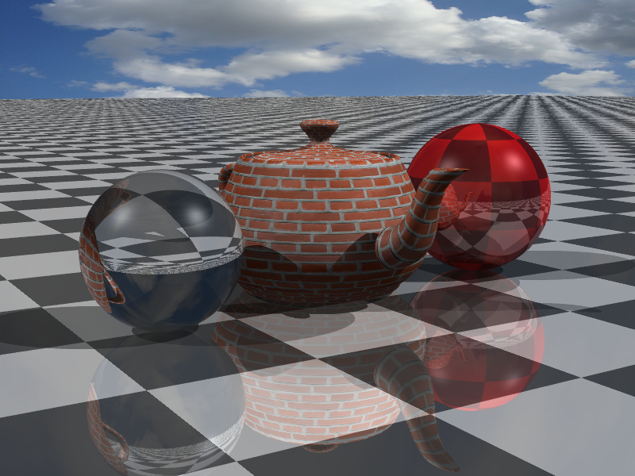
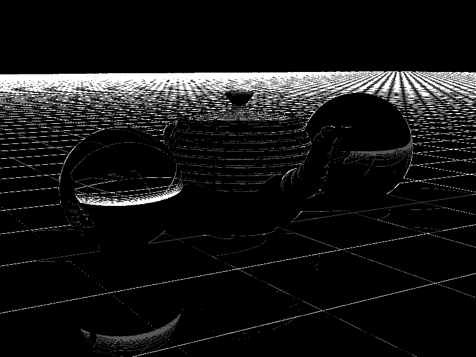

CS6620 - Ray Tracing for Graphics
Project 8 - Antialiasing.
Results
I first started by implementing 4 samples per pixel. This took 13:21 to render.

This is compared to the following image, with 16 samples per pixel taking 53:48 to render.
I then implemented adaptive antialiasing, with four samples being the lowest number of samples
per pixel, followed by 16 samples, and at the most 64 samples. This image took 16:48 to render.
I noticed that this image did not look particularly good. Without changing my thresholds, I
rendered the below image with 16, 32, and 64 samples. It took 61:58.

Machine Specs
Running Windows 10 on a Bootcamped MacBook Pro
| Processor |
Intel Core i7 2.50 GHz |
| RAM |
16GB 1600 MHz DDR3 |
| Graphics Card |
Intel Iris Pro 1536 MB |
Project Stumbling Blocks
As I added more samples per pixel, I started to notice that there were a bunch of black pixels
being generated around my left sphere.
After debugging, I noticed that I never checked to see if my sine was greater than 1 in
refraction computations. Setting that value to 1 if it was greater than 1 solved the problem.